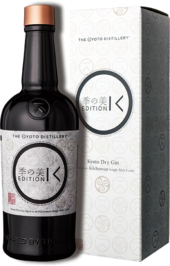

白蘭地 BRANDY
KI NO BI
45.7%
$ 170 (15ml)
$ 330 (30ml)
$ 330 (30ml)
以日本純米製成的清酒作為烈酒原料，再用半年時間去挑選日本最優質的原料。採用11種來自日本不同季節草本植物及辛香料如京都老舖的玉露、柚子、檜木、山椒、檸檬皮等材料，蒸餾出六種不同風味的原酒，再按「伏見之水」調配出季之美。

KI NO BI Edition G
46%
$ 300 (15ml)
$ 550 (30ml)
$ 550 (30ml)
Edition G採用法國頂級香檳 Henri Giraud 酒莊的橡木桶過桶，大部分葡萄來自於香檳區 Ay Grand Cru 特級園，大部份的香檳品牌，都已捨棄橡木桶發酵的傳統製作方式，改以不鏽鋼缸作處理，只有為數不多的品牌，仍堅持以傳統的橡木桶發酵香檳，Henri Giraud 是其中一家。

KI NO TOU
47%
$ 200 (15ml)
$ 350 (30ml)
$ 350 (30ml)
季之美的糖島是來自日本京都釀酒廠的 Old Town Style 琴酒。用來自日本最西部的與那國島Yonaguni的kokorou-"黑糖"蒸餾後加入。 由於Kokotuo 的礦物質豐富的味道，額外的甜味放入了植物的味道，並增加了它自己的複雜性。

令月 琴酒
40%
$ 130 (15ml)
$ 260 (30ml)
$ 260 (30ml)
以日本清酒為基底，添加長崎特產原物料浸製並進行蒸餾。長崎嚴選的枇杷、草莓、蜜柑、檸檬和老梅樹樹枝。由於酒造普用梅枝入清這也是清這名稱"Umegaeda"梅枝清造的出來。

KI NO TEA
45.1%
$ 200 (15ml)
$ 350 (30ml)
$ 350 (30ml)
特別興四治時期至今的京都宇治老茶舖─櫻井七茗園跨界合作，從精挑選的「奧之山」茶園精選出優質的茶葉，調製出日本頂級的京都宇治茶種中帶有甘甜香味的「玉露」和「嚴茶」，將其精心調製成「季之茶」琴酒，並讓核心味道長期停留在茶香上。
Ori-Gin 1848
48%
$ 150 (15ml)
$ 300 (30ml)
$ 300 (30ml)
在沖繩首里誕生的釀釀琴酒「ORI-GiN1848」，以熱帶和溫帶的風味為基礎，加入藤蔓植物如杜松子等愉悅的植物風味。檯籍上的1848是瑞穗酒造成立年份，而傳統和挑戰的思想源於日本蒸餾酒的起源地沖繩，首里。

KI NO BI Edition K
48%
$ 300 (15ml)
$ 550 (30ml)
$ 550 (30ml)
日本京都蒸餾所跟艾雷島的 Kilchoman 合作創造出季之美 Edition K 琴酒，季之美Gin陳年於Kilchoman的泥煤威士忌桶之中，誕生的作品帶陣陣的泥煤香氣，同時又保留了季の美的纖細芳香。
櫻尾 無垢之華
47%
$ 200 (15ml)
$ 350 (30ml)
$ 350 (30ml)
SAKURAO GIN WHITE HERBS 為突達感謝而創造，開啟這瓶純白的酒瓶，猶如打開純白婚紗。一般華麗的香氣撲面而來，喚起「幸福」的形象。白玫瑰、香草、馬鞭蘭、櫻檸草、薰衣草、丁香、蜜柑木、廣島檸檬、臘橙、蜜柑、柚子、酸橙、檜木、綠茶、赤紫蘇、生薑、牡丹子、芫荽子。

沖繩昌廣琴酒 No.1
47%
$ 130 (15ml)
$ 260 (30ml)
$ 260 (30ml)
Okinawa Gin 以沖繩境內的獨特芳香植物-沖繩香檬作為主要襯托杜松子的風味來源,他們彼此融合、將風味極大化,另外 4 種沖繩特色芳香物種包含蕃石榴葉 、長胡椒、 洛神花和沖繩苦瓜。尾韻綿延甘苦並帶有辛香料的刺激感。除了常見的調酒製作之外,其酒體豐富的口感也適合加冰純飲。

初 琴酒 Log. 2023
47%
$ 250 (15ml)
$ 350 (30ml)
$ 350 (30ml)
Log. Series，為初琴酒的常規年度作品，從 2019 年開始堆出。Log. 表現當年的「天、地、人」特色。以台灣多種原生植物淬鍊而成，表現出杜松子、草本、水果與辛香料的多重氣息，非常適合純飲。手工製作，每一支酒都有獨立編號與製作者的親手簽名。

黎凡特泥煤桶陳琴酒
47%
$ 130 (15ml)
$ 260 (30ml)
$ 260 (30ml)
黎凡特地中海琴酒屬於 Distilled GIN, 完全採用奶與蜜蒸餾廠生產單一麥芽威士忌的原料(麥芽)和蒸餾器來生產, 所有材料經過浸泡48小時候再經過第三次蒸餾生產而成。本品項特別在來自蘇格蘭艾雷島的泥煤桶中熟成數月後才裝瓶。